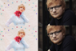

Pop
In rock/pop's nascent days, "pop" applied to commercially successful artists who won broad, sweeping public interest with simplistic, lighthearted musical fare. As the style diversified and mutated into numerous subgenres,
the notion
of popular music moved from indicating the one-hit wonder, mass-appealing artist to denoting an often sugarcoated "pop" sound that was pure aural amusement: three minutes of bright melodies and infectious hooks. But the
term
essentially means a tune composed for popular appeal; the paradox facing many proponents of "pop" these days is that their stylistic approaches may seem too archaic, simplistic or eclectic for the mainstream. But purveyors
of unusual
pop pepper the landscape of Indie Rock.
